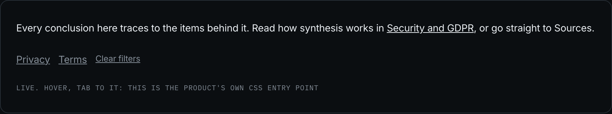
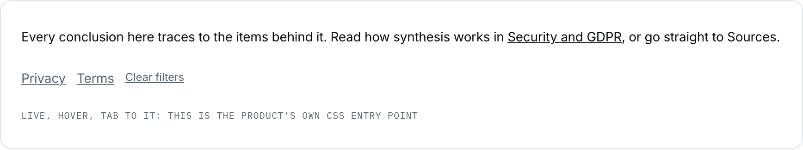
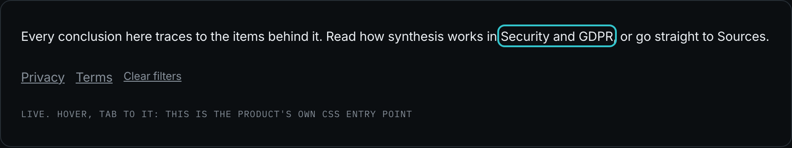
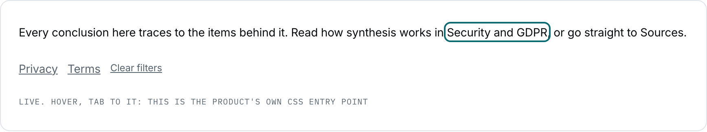

Every conclusion here traces to the items behind it. Read how synthesis works in Security and GDPR, or go straight to Sources.
Privacy TermsLive. Hover, tab to it: this is the product's own CSS entry point
The family this product did not have. 18 screens, 88 occurrences: the largest single group of controls in the product.
Variants and states
Emphasis says how much ink the link carries; behaviour says whether it travels or acts. Three forms, three states each:
rest, hover, focus-visible. Every cell is the product's own rule: the states are drawn from the CSS, not painted.
There is no pressed row, because link.css has no :active rule. There is no disabled row, and no visited row: both are absent on purpose, with the reasons under Technical.
| Form | State | Link |
|---|---|---|
Plain.link | Rest | Security and GDPR |
| Hover | Security and GDPR | |
| Focus | Security and GDPR | |
Muted.link--muted | Rest | Privacy |
| Hover | Privacy | |
| Focus | Privacy | |
Text action.link--action | Rest | |
| Hover | ||
| Focus |
Properties
| Property | Type | Values | Default |
|---|---|---|---|
| Emphasis | variant | plain 62 .link · muted 26 .link--muted | none: one class is required |
| Behaviour | variant | destination a.link · action 2 button.link--action | destination |
| Target | context | inline, exempt from the 44px floor · standalone 44px, which .link--action carries itself | inline |
| State | variant | rest · hover · focus-visible | rest |
How to use it
When
Everywhere a person leaves the current screen without acting on it: the breadcrumb back to Synthesis, the legal table of contents, the marketing footer, the line under a settings panel pointing at the document that explains it.
The rule that keeps it apart from the button is one sentence, and this product needs it more than most: a button acts, a link travels. On a screen whose whole promise is that every claim can be opened, the difference between "this does something" and "this shows you the evidence" is not cosmetic.
When not
- To make something happen on this screen: take
.btn--ghost, or.link--actionfor a text action. A link that acts is a button in disguise. - To point at a row that is entirely a destination: take
.cardrow. The whole row is the target there, not a word inside it. - To underline a link permanently in a list: take the muted form. Ink recedes, the underline does not multiply.
Read how Sift stores and protects your data on the Security and GDPR page.
Read how Sift stores your data here.
.link--action.| If you are about to | Take instead | Why |
|---|---|---|
| make something happen on this screen | .btn--ghost, or .link--action for a text action | A link that acts is a button in disguise |
| point at a row that is entirely a destination | .cardrow | The whole row is the target there, not a word inside it |
| underline a link permanently in a list | the muted form | Ink recedes, the underline does not multiply |
Where it stands
18 screens, 88 occurrences across the wireframes. The colour screens that carry the classes today: .link on 7.2, .link--action on 2.0. The rest are unclassed anchors in the colour copies, and the families live in grey.
The earlier page named 0.0 Home among the screens it stands on. The colour copy of Home carries its anchors without a class, so it is not chipped here [?].
Anatomy
The family this product did not have. The Stage 07 census counted 88 unclassed anchors across 18 screens, in prose, footers, tables of contents and breadcrumbs, and not one of them had a declaration anywhere, which is exactly why the colour layer had no rule for any of them either.
| Zone | Class or element | Rule |
|---|---|---|
| the link | .link | Primary ink, no underline at rest. In a dense list a permanent underline on every link is noise |
| the muted form | .link--muted | Secondary ink, for a footer or a legal column where the link is the whole content and the ink is what recedes |
| the text action | .link--action | A 44px target and an underline. It is a control, not a destination |
Axes, with the rule that chooses
| Axis | Values | The rule that chooses |
|---|---|---|
| emphasis | plain 62 · muted 26 | Ink recedes where links are the content. A footer of primary-ink links would be the loudest thing on the page |
| behaviour | destination · action 2 | A link travels, an action acts. "Clear filters" is a text action with a control target, folded here at Stage 07 from a fourth button emphasis |
| target | inline · 44px | An inline link inside running text is exempt from the floor, for the same reason WCAG exempts it. A standalone one is not |
Tokens it reads
| Reads | Which grows from | For |
|---|---|---|
--text-primary | --grey-050 | the link ink |
--text-secondary | --grey-400 | the muted form, and the text action at rest |
--size-target | declared in link.css for .link--action | the 44px target. The text action is the literal 12px of kit.css with no side padding: no type step is 12 |
| State | Token | What moves |
|---|---|---|
| hover | none: text-decoration | The underline appears. No colour token, because the ink is already at its role and a second ink would be a second link style |
| focus-visible | --line-focus | The product ring, from base.css |
| visited | absent, deliberately | A visited style on a product screen tells a stranger which evidence this person already opened. In an app, visited is a privacy leak rather than a convenience |
| disabled | absent | A link that cannot be followed is not a link. Where a destination is unavailable the product shows text, not a dead anchor |
Underlined on hover only. The muted form and the text action change ink on hover, from --text-secondary to --text-primary; the plain form changes only its underline.
Snapshots, the two live states, both themes




Four snapshots, and two states named as ABSENT with their reasons above. That is the point of the block: a state this component cannot have is written down rather than left for somebody to add later.
Re-take: node scripts/shoot-states.js link
Copy this
<a class="link" href="#">Security and GDPR</a> <a class="link--muted" href="#">Privacy</a> <button class="link--action">Clear filters</button>
File: design/system/components/link.css, imported in the atoms group of design/system/index.css.
Changes, newest first
| Date | What changed | Record |
|---|---|---|
| 2026-11-21 | .link--action is 12px with no side padding again, as in kit.css. The August --type-xs size and --space-1 padding were drift nobody approved | docs/decisions.md, "Step 6: the system reconciled with the product" |
| 2026-11-20 | The page moved to the card format: Overview, Technical, History. The states became a live matrix drawn from the product's own rules; the snapshots moved to Technical | docs/decisions.md, "The showcase is read by purpose" |
| 2026-08-19 | Split out of the flat kit into components/link.css, with its page at Step 5 of Tokens + Components | commit 2353608 |
| 2026-08-18 | The family was given a declaration: the 88 unclassed anchors across 18 screens became the Inline text link, level 1. "Clear filters" folded into it as .link--action instead of becoming a fourth button emphasis | design/kit/docs/inventory.md, "Cross-check 2: control without a family"; docs/decisions.md, "The kit grew out of the colour layer, it was not written from the language again" |
| 2026-08-18 | The two Stage 06 seed screens were re-pointed to the kit and clear was replaced by link--action | docs/decisions.md, "The kit was proved on the seed screens before anything new was built" |